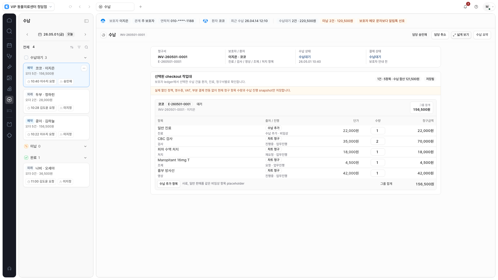
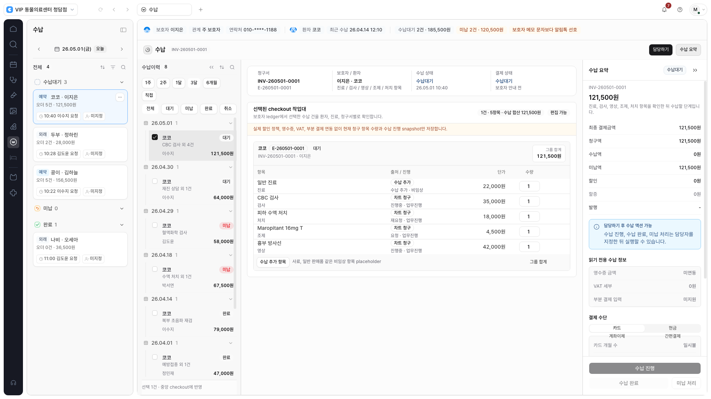
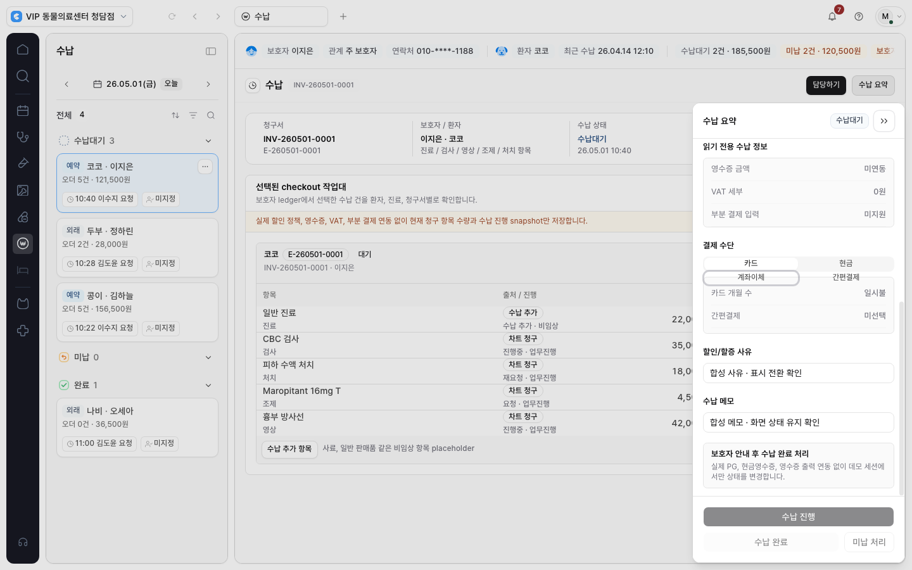
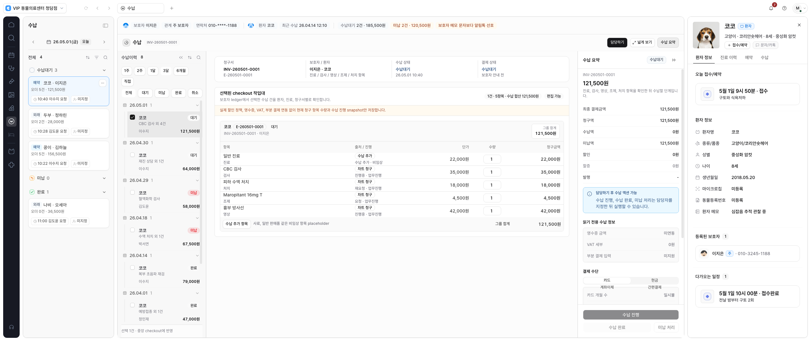

수납에 좁게·넓게 보기와
내부 이력·결제 요약을 적용했습니다.
로컬 구현 · 합성 화면 검증 완료 · 배포 전청구표를 기본 1,120px로 모으고, 수납이력과 기존 결제 요약을 작업 영역 안에서 함께 봅니다. 제목·담당하기·폭·요약 버튼은 문서 폭과 독립된 상단 도구줄에 있습니다.
이번 단계로 임상검사 → 진료/차트 → 조제/처치 → 영상 보고서 → 수납의 다섯 모듈 적용을 마쳤습니다. 실제 결제 사업자 연동이나 운영 배포는 수행하지 않았습니다.
이번에 달라진 점
대기열·내부 패널·바깥 프로필을 제외한 실제 공간이 상한보다 넓을 때만 폭 버튼이 나타납니다. 패널을 열어 버튼이 숨겨져도 모듈별 선택은 유지합니다.
같은 청구표에서 폭 비교
1,920px 화면에서 CBC 수량을 2로 바꾼 뒤 두 보기 모드를 비교합니다. 표 열과 간격을 유지하며, 수량·담당 지정·행 합계가 폭 전환 뒤에도 남습니다.

반복 렌더링마다 checkout을 다시 조회하던 의존성도 안정화했습니다. 같은 선택으로 폭만 바꿀 때 추가 조회를 만들지 않고, 청구 금액·상태나 선택이 바뀌면 기존 API로 갱신합니다.
이력·청구표·결제 요약 함께 보기
기존 이력 280px, 결제 요약 336px를 도구줄 아래에 표시합니다. 주요 결제 버튼은 기존 요약 패널의 고정 하단에 유지하고, 청구표의 금액·수량·상태 동작도 유지합니다.

공간이 부족하면 최근에 연 패널을 모달로 표시합니다. 요약 입력과 이력 필터·선택은 표시 방식 전환 중 유지됩니다. 결제 확인창은 요약 모달 위에서 독립적으로 열리고, Escape는 가장 위 확인창부터 닫습니다.

환자 프로필과 공존
프로필은 바깥 영역을 사용하고 수납 요약을 대체하지 않습니다. 충분한 공간에서 내부 양쪽 패널과 프로필을 함께 표시합니다.

검증 결과
최종 검증 82개 항목 통과. 수납 레이아웃 8개, 기존 수납 13개, 수납 서버·권한·금액 계약 26개, 공유 패널 5개, 임상검사 레이아웃 9개, 차트 6개, 조제/처치 7개, 영상 보고서 8개를 확인했습니다.
| 영역 | 확인 내용 |
|---|---|
| 문서·상태 | 수량과 행 합계, 표 열, 담당 지정, 합산 제외, 폭 선택, 세로·표 내부 가로 스크롤 |
| 패널·접근성 | 이력 필터·선택, 사유·메모의 표시 전환 유지, 중첩 미납 확인창 취소·사유 유지, Tab·Escape·포커스 복귀, 프로필 공존 |
| 기존 금융 계약 | 서버 계산·단가 소유권, 권한 거부·워크스페이스 경계, 수납 진행·완료·미납 사유·오류 재시도, 완료/취소 건 합산 제외 |
| 화면 크기 | 1366·1440·1600·1920·2560px, 960 CSS-px 확대 대응 레이아웃, 동작 줄이기 설정 |
| 정적 검사 | ESLint·TypeScript·프로덕션 빌드, 문서 검사, diff 검사와 비밀값 검사 통과 |
검증 경계와 다음 판단
- 검증은 loopback mock 인증과 합성 데이터만 사용했습니다. 실제 고객·환자·결제 데이터나 외부 공급자 동작은 다루지 않았습니다.
- 기존 합성 API의 금액 경계: 청구표에서 CBC 수량 2의 행·그룹 합계는 156,500원입니다. 별도 mock checkout API는 고정 스냅샷 121,500원을 반환하므로 중앙 수납 합산은 그 서버 값을 우선합니다. 이 기존 경계를 유지했으며, 실제 금융 금액 동기화가 완료됐다는 검증이 아닙니다.
- 메모·할인/할증 사유는 표시 전환 중 화면 입력 유지 검증입니다. 패널을 완전히 닫았다 여는 기존 수명주기와 저장 범위는 변경하지 않았습니다.
- 실제 PG·VAT·영수증·부분 결제·환불·정산 연결은 기존 범위 밖입니다. 실제 사용성 검토와 별도 출시 절차가 남아 있습니다.
- 다음 단계는 다섯 모듈의 화면 검토와 폭 후보 확정입니다. 배포하려면 프로젝트의 별도 출시 승인·검증 절차를 따릅니다.
변경 파일과 근거
수납 모듈과 registry, 새 수납 레이아웃 검사, 기존 수납·checkout·공유 패널 검사, 공통 레이아웃 계약·작업 기록·작업 목록을 갱신했습니다. API·DB·권한·금액 계산식과 의존성은 변경하지 않았습니다.